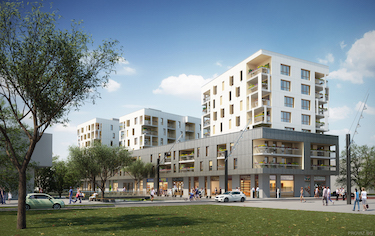
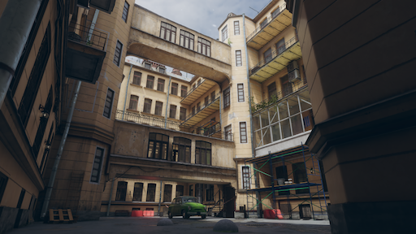
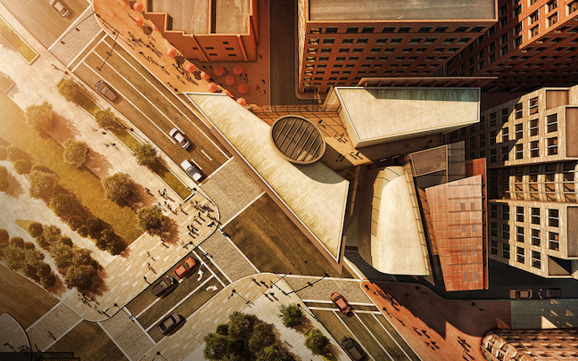
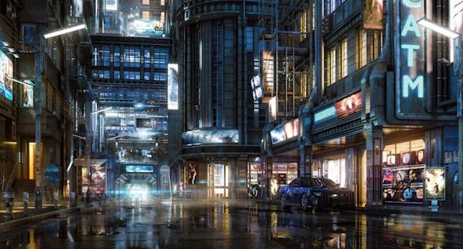
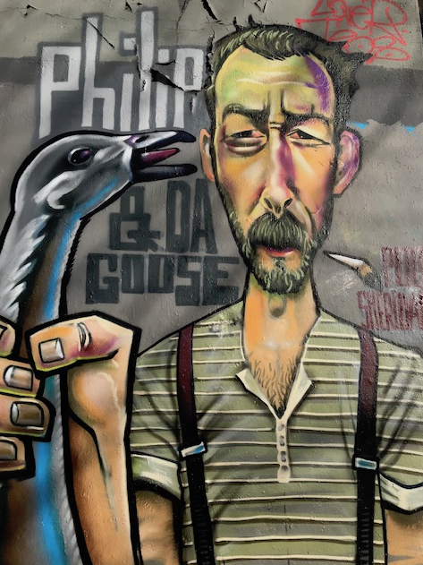
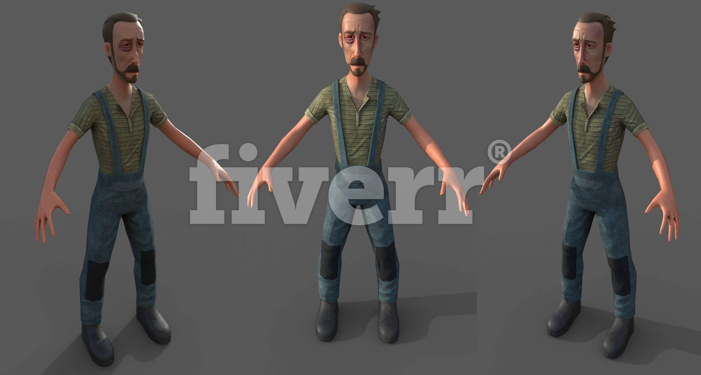

Zürich 3D der Prototyp
Dies ist die Projektbeschreibung des Prototypen für das Zürich 3D Projekt.
Motivation
Zur Visualisierung von Simulationen in 2D / 3D habe ich Tools gesucht und bin dabei auf die Game Engine Unity3D, die CityEngine von Esri und den GIS-Browser der Stadt Zürich gestossen.
Idee
Da Städte wie das heutige Zürich im Fokus der Simulation sind, bietet es sich an mit den 3D Daten der Stadt einen Prototypen zu bauen. Das Stadtmodell besteht aber nur aus den Quadern der Gebäude mit den Dächern.
Also müsste ich eine Technologie wie Computer Generated Architecture (CGA) der CityEngine verwenden oder selber entwickeln.
| Aussen |
Innenhof |
Architektur |
Nacht |
|  |
 |
 |
 |
Sonst dürfte es schwierig werden, innert nützlicher Frist, und mit den mir zur verfügung stehenden finanziellen Mittel ans Ziel zu kommen.
Vision
Da Unity3D eine Game Engine ist, war folgende Projektidee naheliegend: Simulations und Gamification Platform für Zürich in 3D
| Simulation |
Gamification |
 |
 |
Manche mögen sich jetzt fragen: was hat das Soziale Netzwerk da zu suchen ?
Die MRS Mind Research Systems GmbH hat den Zweck: Erforschung von Gedanken und Gefühlen
Ein Soziales Netzwerk ist ein Speicher für Emotionen, den ich in 3D zu visualisieren versuchen will.
- Ein Like ist doch kein differenzierter emotioneller Ausdruck ?
- Auf was bezieht ein Like gepostet zu einem Bild überhaupt ?
Solche und andere Fragen zu beantworten, ist der Zweck der Simulation.
Mit Zürich 3D lassen sich aber auch interessante Spielanwendungen realisieren… 😃
Vorgehen
Um solche Projekte abzuwickeln ist es gut sich an einschlägige Literatur zu halten. Denn schief gehen tut noch genug. 👻
Alles alleine umsetzen zu wollen ist keine gute Idee. Freelancer findet man auf Platformen wie Upwork. Sich etwas Expertenwissen zu organisieren, kann nicht schaden. 😉
Inspiration
Meine grösste Inspiration ist mein Mami, das Leben an und für sich und natürlich Zürich. Dann kommen noch all die lehrreichen und schönen Bücher die ich lesen durfte. Und natürlich die vielen lieben Freunde, die geduldig meinen verrücken Ideen lauschen und mir immer wieder verzeihen, wenn ich wieder einmal dem Fass den Boden ausschlage. 🙏
Plan / Team
Der Plan mit einem Team aus mir und 3 Experten in vier Wochen den Prototypen für Zürich 3D zu entwickeln.
- Donat ▫️ Lebenskünstler und Informatiker ▫️ Zürich, Schweiz
- Leonard ▫️ 3D Content Creator, Animator and Effects Artist ▫️ Douala, Cameroon
- Phil ▫️ GIS, CityEngine Expert / Developer ▫️ Kisumu, Kenya
- Nirmla ▫️ Expert with wordpress/PHP, HTML/CSS3, SASS, Angular JS ▫️ Mandi, India
Projekt
Das Projekt Prototyp Zürich 3D dauert einen vier Wochen Sprint. Startete am Montag den 22.10.2018 und endet am Sonntag den 18.11.18.
💯 Woche 1
- Ziel: Ein 3D Modell von Zürich gekauft bei TurboSquid für über $400.- ausprobieren. War leider absolut Wertlos siehe Videoreport !). Als Alternative die Daten vom GIS-Browser runterladen und in Unity3D zum Leben zu erwecken versuchen.
- Periode: 22.10.2018 - 28.10.18
- Dauer: 7 Tage
- Donat genügend Stunden
- Leonard 10 Stunden
- 🥇 Erfolg: 100%
- Zusammenfassung: Das Modell von TurboSquid war totaler Schrott, den ich zum Glück zurück erstattet bekam. Leonard 👱 ist ins Team gekommen und hat einen Videoreport betreffend dem 💩 Modell von TurboSquid als Video Report geschickt.
💯 Woche 2
- Ziel: Daten von OpenStreetMap und GIS-Browser kombinieren und in Unity3D zeigen (80% der Zeit). Erste Demoszene bauen in Unity3D (20% der Zeit).
- Periode: 29.10.2018 - 04.11.18
- Dauer: 7 Tage
- Donat genügend Stunden
- Leonard 40 Stunden
- 👍 Erfolg: 80%
- Zusammenfassung: Habe die Daten der Stadt als 3D Modell in einer Datei / Archiv noch nicht organisieren können. Leonard hat einen Videoreport seiner zweiten Woche als Video Report geschickt. Es waren noch zu viele offene Fragen bezüglich der Daten und wie man denn die Facaden erzeugen könnte zu klären, weshalb die Demoszenen nicht gezeigt werden konnten.
💯 Woche 3
- Ziel: Organisiere das Stadtmodell Zürich 3D. Überprüfe die CityEngine bezüglich Möglichkeiten und Lizenzkosten bei Esri Schweiz. Finde einen GIS und CityEngine Experten als freien Mitarbeier. Kontaktiere Kunstschaffende von Zürich wie Illustratoren, 3D Animationsprofis oder Filmproduzenten. Finde Mitarbeiter für 3D Modellierung, Cartoon & Anime Zeichner sowie Dienstlister für 2D nach 3D Modellkonvertierung. Besuch eines 3D Körperscanner und Plastikfigurendruckservice in Zürich. Erstelle eine Lesezeichensammlung für all die 3D, Unity Animationsquellen im Internet. Kaufe und lese Bücher über Animation, Zeichenstyle, Architektur und Design.
- Periode: 05.11.2018 - 11.11.18
- Dauer: 7 Tage
- Donat genügend Stunden
- Leonard 7 Stunden
- Phil 28 Stunden
- 🥇 Erfolg: 100%
- Zusammenfassung: 3D Stadtmodell OGD(1.5 GB tar file). CityEngine Advanced (Demo Lizenz 30days trial). Phil 👱 ist ins Team gekommen.
Besucht oder telefoniert mit:
Bookmarks gesammelt: Wiki Animation 3D
💯 Woche 4
- Ziel: Retro der letzten vier Wochen. Neuplanung bis ende November 2018. Documentationsqualität verbessern. Demoszenen erstellen Schindlerpark, Limmatplatz or Escher-Wyss-Platz, Kornhausbrücke.
- Dauer: 7 Tage
- Donat genügend Stunden
- Leonard 40 Stunden
- Phill 39 Stunden
- Nirmla 2 Stunden
- Periode: 12.11.2018 - 18.11.18
- 🥇 Erfolg: 100%
- Zusammenfassung: Diese Projektdokumentation und ins Team gekommen ist Nirmla 👩.
Bewohner von Zürich 3D
Voller Stolz darf ich euch unseren ersten Bewohner vorstellen
Philip & da Goose
| 2D Grafity (Zürich Letten) |
Interpretation Zürich 3D |
|  |
 |
Demnächst mehr unter zuerich3D.org ✌️🌸